YEDİYILDIZ
Entreprenurship Office
Your Guide to Building Your Dreams
About YEDİYILDIZ

Established in Istanbul in 2009, Yediyıldız Girişim Office boasts 28 years of experience in Real Estate, Construction, Media, and Consultancy. Our mission is to create value for our partners through innovative business practices, aiming to lead in the future world. We strive to provide reliable and impactful solutions, contributing to our customers' success and adding value to the business world.
Services
Real Estate
Buyers & sellers, swift property solutions. High-impact ads, targeted portfolios
connect faster. Save time with our comprehensive database. Trust us for your property
needs.
Construction
Yediyıldız İnşaat, the construction sector, continues its journey in the business
world with its long years of accumulated knowledge and experience. The company
continues its activities in the domestic and international projects in accordance with
the fields specified in its company articles of association.
Media
Yediyıldız Medya is a company specialized in visual arts and communication design with
24 years of experience. Our services include Video Production, Digital PR, Crisis and
Reputation Management, Social Media Management & SEO, Graphic Design, and Web Design.
We offer innovative solutions to our clients.
Consulting
Strategic consultancy for competitive advantage. Expertise in finance, marketing, HR,
business development, and technology. Optimize processes, drive innovation, support
digital transformation. Tailored solutions for clients.
Organization
Yediyıldız Organization offers professional services for social and business events.
From parties to meetings and conferences, we meticulously plan, design, and manage all
processes to create unforgettable experiences. We prioritize quality, creativity, and
customer satisfaction in every event we organize.